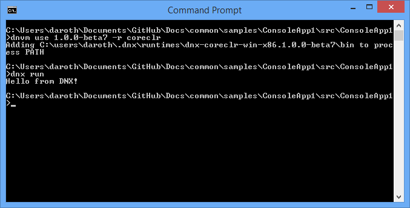

Creating a Cross-Platform Console App with DNX¶
By Steve Smith
Using the .NET Execution environment (DNX), it’s very easy to run a simple console application.
- In this article:
You can view and download the source from the project created in this article.
Creating a Console App¶
- Before you begin, make sure you have successfully installed DNX on your system:
Open a console or terminal window in an empty working folder, where dnx is configured.
Creating a console application is extremely straightforward. For this article, we’re going to use the following C# class, which has just one line of executable code:
1 2 3 4 5 6 7 8 9 10 11 12 13 14 | using System;
using System.Collections.Generic;
using System.Linq;
using System.Threading.Tasks;
namespace ConsoleApp1
{
public class Program
{
public void Main(string[] args)
{
}
}
}
|
It really doesn’t get any simpler than this. Create a file with these contents and save it as Program.cs in your current folder.
Specifying Project Settings¶
Next, we need to provide the project settings DNX will use. Create a new project.json file in the same folder, and edit it to match the listing shown here:
1 2 3 4 5 6 7 8 9 10 11 12 13 14 15 16 17 18 19 20 21 22 23 24 25 26 27 28 | {
"version": "1.0.0-*",
"description": "ConsoleApp1 Console Application",
"authors": [ "tarcher" ],
"tags": [ "" ],
"projectUrl": "",
"licenseUrl": "",
"dependencies": {
},
"commands": {
"ConsoleApp1": "ConsoleApp1"
},
"frameworks": {
"dnx451": { },
"dnxcore50": {
"dependencies": {
"Microsoft.CSharp": "4.0.1-beta-23409",
"System.Collections": "4.0.11-beta-23409",
"System.Console": "4.0.0-beta-23409",
"System.Linq": "4.0.1-beta-23409",
"System.Threading": "4.0.11-beta-23409"
}
}
}
}
|
The project.json files defines the app dependencies and target frameworks in addition to various metadata properties about the app. See Working with DNX Projects for more details.
Save your changes.
Running the App¶
At this point, we’re ready to run the app. You can do this by simply entering dnx run from the command prompt. You should see a result like this one:
Note
The dnx command is used to execute a managed entry point (a Program.Main function) in an assembly. By default, the dnx run command looks in the current directory for the project to run. To specify a different directory, use the –project switch.
You can select which CLR to run on using the .NET Version Manager (DNVM). To run on CoreCLR first run dnvm use [version] -r CoreCLR. To return to using the .NET Framework CLR run dnvm use [version] -r CLR.
You can see the app continues to run after switching to use CoreCLR:
The dnx command references several environment variables, such as DNX_TRACE, that affect its behavior.
Set the DNX_TRACE environment variable to 1, and run the application again. You should see a great deal more output:
Summary¶
Creating and running your first console application on DNX is very simple, and only requires two files.